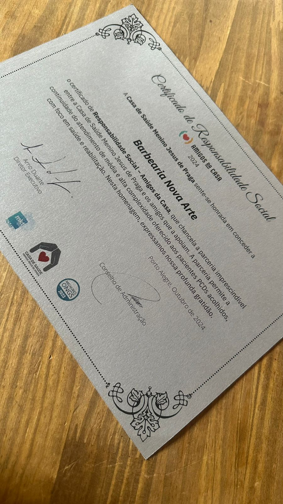
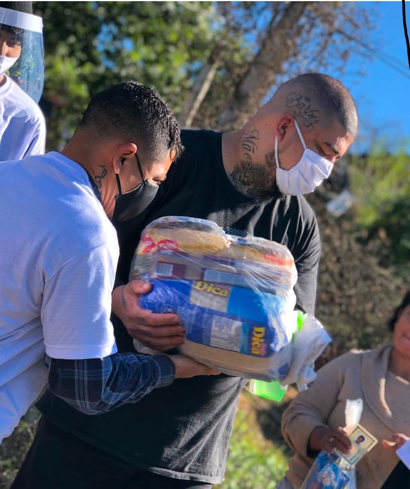

Por mais de 10 anos, Henrique (líder da NovaArte) trabalhou na área de segurança, onde, apesar da estabilidade e de um público fiel, sentia-se insatisfeito e incompleto. Apesar de ter um físico apropriado para essa profissão, isso não bastava para preencher o vazio que carregava. Além disso, enfrentou a falta de reconhecimento por parte da empresa, mesmo após desempenhar suas funções com dedicação e solicitar aumentos sem sucesso. Após muito refletir, decidiu deixar a segurança e buscar algo que realmente lhe trouxesse propósito. Foi então que descobriu o empreendedorismo e encontrou sua verdadeira vocação. Investiu em um negócio próprio, alinhado com seus valores, com o objetivo de causar impacto positivo na comunidade. Essa transição trouxe crescimento pessoal e a realização que ele buscava.
Trabalhos Sociais
Menino Jesus de Praga
Cortes para Necessitados
Trabalho Voluntário
Menino Jesus de Praga
A Casa do Menino Jesus de Praga é um espaço de acolhimento para pessoas com deficiências devido a lesão cerebral, muitas das quais foram abandonadas ou vêm de famílias carentes. A casa conta com profissionais de várias áreas, como fisioterapia e neurologia, para oferecer cuidado e reabilitação. A Barbearia NovaArte tem o prazer de contribuir com seu trabalho voluntário, oferecendo cortes de cabelo que trazem autoestima, dignidade e sorrisos para os abrigados. A equipe realiza essas ações com muito carinho, fechando o estabelecimento pela manhã, até as 14 horas para cortar o máximo possível de cabelos. Para nós, é gratificante ver o impacto positivo desses gestos simples na vida das pessoas, que aguardam ansiosamente pela próxima visita.
Cursos Nova Arte

A Barbearia NovaArte oferece cursos gratuitos para jovens da comunidade Bom
Jesus, visando proporcionar oportunidades de trabalho. O projeto chamou a atenção do SBT, resultando em uma
parceria e no crescimento das doações para a comunidade.
Além dos serviços tradicionais, a barbearia oferece cortes gratuitos de segunda a quarta-feira para a
comunidade, utilizados como modelos para que os alunos dos cursos treinem. Esses cortes, que incluem
tratamentos químicos, são feitos com o mesmo cuidado e respeito que um cliente pagante, com direito a café,
água e uma boa conversa. O objetivo é ajudar pessoas que realmente precisam, oferecendo uma nova chance de
vida e contribuindo para a autoestima e reintegração social.
Trabalho Voluntário
Durante a pandemia, a Barbearia NovaArte fez diversas doações, incluindo 18 mil máscaras, álcool em gel, perus de Natal, gás e 800 cestas básicas por mês. A barbearia fechava por 3 ou 4 dias para organizar e distribuir os itens, além de visitar famílias da comunidade para identificar as maiores necessidades. Esse trabalho solidário continuou até o final de 2020, impactando diretamente muitas famílias em um momento difícil.

Conheça a equipe NovaArte
Depoimentos
Trabalho muito profissional e ambiente acolhedor. Serviços feitos com muito capricho e dedicação. Ótimo atendimento, simpatia com os clientes, limpeza, ambiente agradável e organizado. Recomendo muito.
Fernanda Brasil
Atendimento agradável, com água fresca, cafezinho, ambiente agradável, boa iluminação, banheiro limpo, marquei um horario com meu filhoe fui muito bem atendido, recomendo.
Cristiana Muller
Parabéns gurizada nova arte!! Agradeço pelo atendimento, respeito e parceria, pelo tratamento recebido em todos estantes, dos serviços prestados, além da qualidade indiscutível do serviço, momentos de boas risadas junto a família nova arte, valeu gurizada tamo junto .